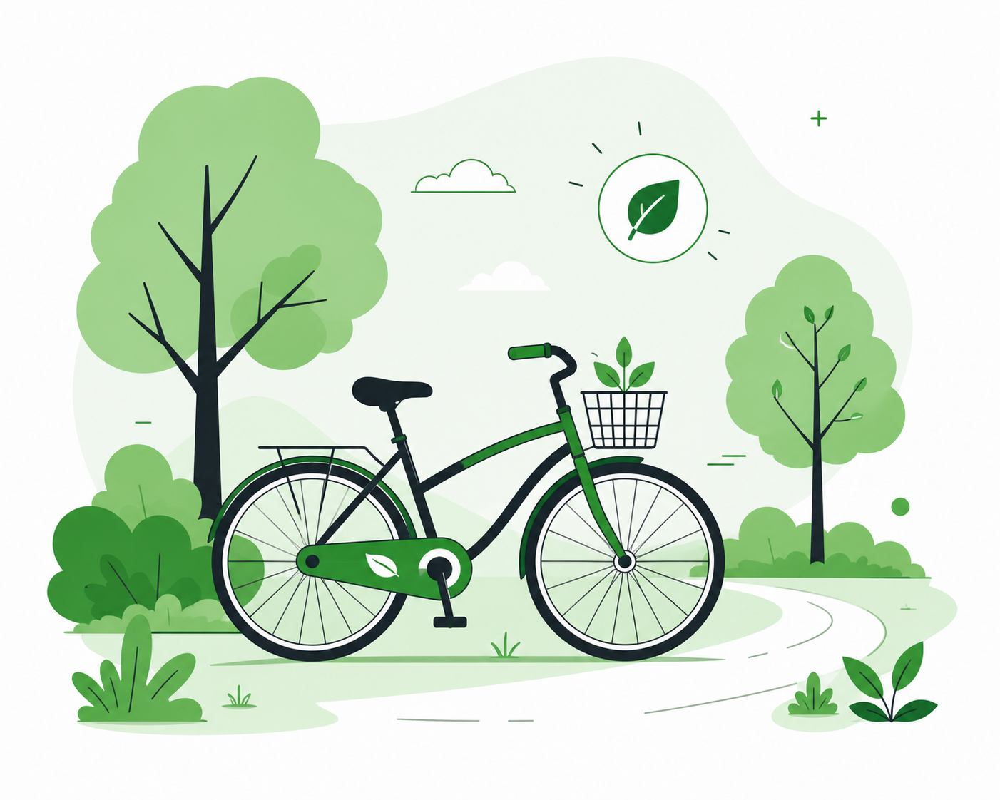
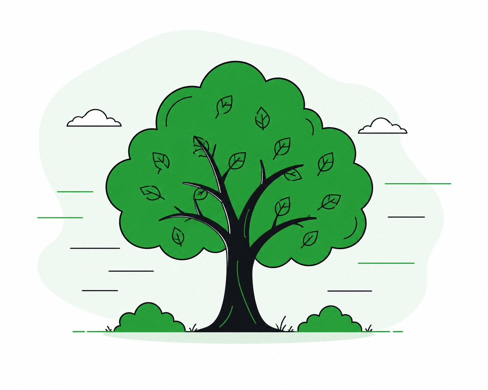
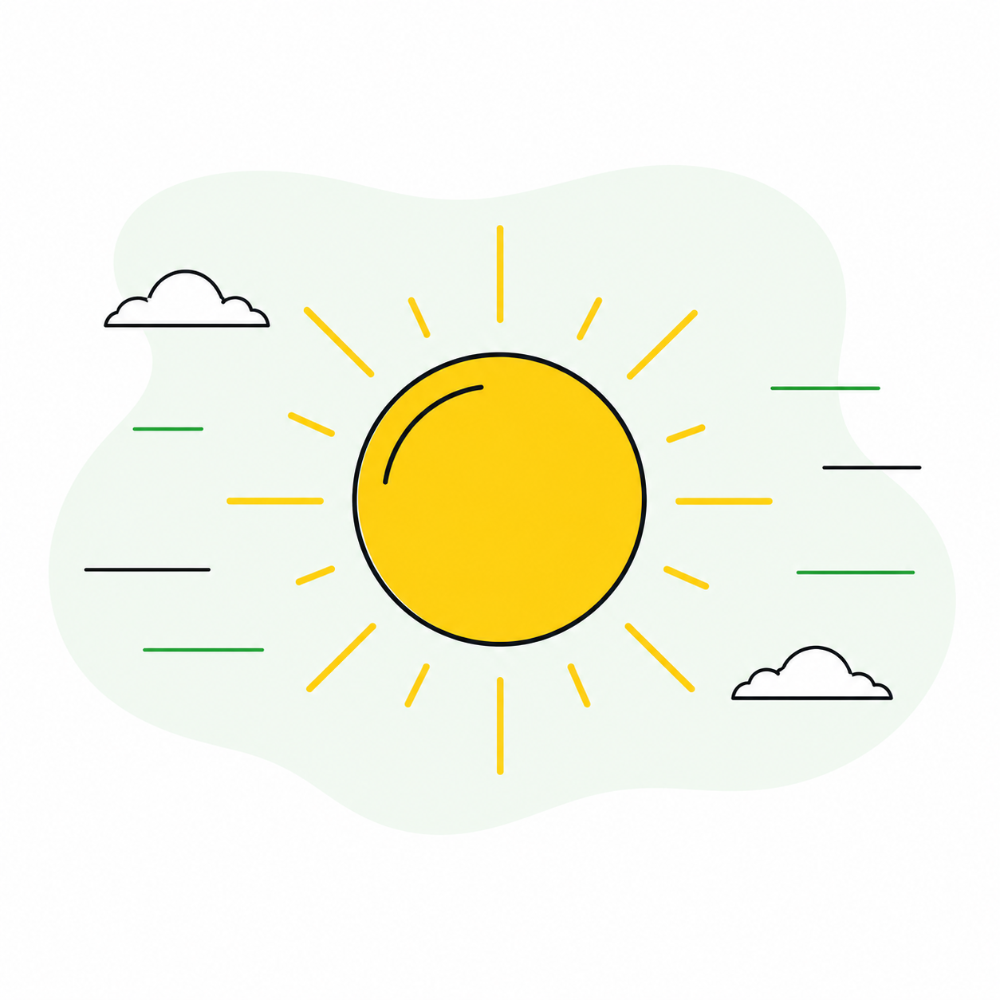

Movilidad y Aire Limpio
Consulta información ambiental
alternativas de movilidad sostenible.
Explorar
Calidad del aire y
movilidad sostenible
La calidad del aire es un factor fundamental para la salud y el bienestar de las personas. El aumento del tráfico vehicular y las emisiones contaminantes afectan el medio ambiente y contribuyen al cambio climático. EcoRuta busca fomentar la movilidad sostenible mediante información ambiental, recomendaciones ecológicas y alternativas de transporte más limpias para construir ciudades más saludables y sostenibles.
Ver Mas
Pequeñas acciones, grandes cambios.

Movilidad Ecológica
Impulsamos el transporte sostenible mediante alternativas ecológicas que reducen las emisiones y mejoran la movilidad urbana.

Naturaleza Viva
Fomentamos el cuidado ambiental y la reforestación urbana para crear ciudades más verdes, saludables y llenas de vida.

Energía Limpia
Promovemos un clima sostenible mediante el uso de energías limpias y acciones que ayudan a mantener un aire más puro para todos.